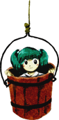

Título: Touhou Chireiden ~ Subterranean Animism
Desenvolvedora: Team Shanghai Alice
Criador: ZUN
Data de lançamento: 16 de agosto de 2008
Plataforma: PC (Windows)
Gênero: Shoot 'em up (danmaku / bullet hell)
Descrição:
Touhou 11 é o décimo primeiro jogo principal da série Touhou e se passa nas
profundezas do Subterrâneo de Gensokyo.
Após o surgimento de gêiseres misteriosos e espíritos vingativos na superfície,
Reimu Hakurei e Marisa Kirisame descem ao Antigo Inferno para investigar a causa do incidente.
Um dia, gêiseres começam a surgir perto do Santuário Hakurei, liberando espíritos vingativos na superfície de Gensokyo. A origem do fenômeno parece vir do Subterrâneo, uma região isolada onde antigos youkais e espíritos perigosos foram selados.
Reimu Hakurei e Marisa Kirisame partem para investigar, recebendo apoio espiritual de youkais da superfície durante a jornada.
Ao descerem até as profundezas do Antigo Inferno, elas descobrem que a responsável pelo incidente é Utsuho Reiuji, uma corvo do inferno que adquiriu o poder do Yatagarasu, concedendo-lhe controle sobre energia nuclear.
Influenciada por Kanako Yasaka, que desejava uma nova fonte de energia para o Santuário Moriya, Utsuho planejava usar seu poder para recriar o inferno na superfície.
Após ser derrotada, o plano é interrompido e o incidente é resolvido. O Subterrâneo permanece isolado, mas novas conexões entre a superfície e o mundo subterrâneo são estabelecidas.
O jogo é conhecido por sua dificuldade elevada e por introduzir personagens importantes do Subterrâneo na série.
Reimu Hakurei (sacerdotisa do Santuário Hakurei)
Marisa Kirisame (maga humana)
Cada personagem pode escolher um parceiro youkai para receber suporte especial durante o jogo, alterando habilidades e diálogos ao longo da história.
